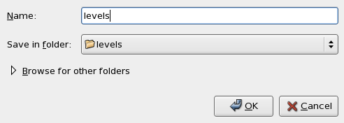

How to create an equation set using the Equation editor
This topic describes how to create an equations set using the Level Setup tool and the equation editor.
Before you begin
You have set up your pin configuration.
Procedure
Example
- In the Test Program Explorer, double-click the <Levels>
icon.
The Level Setup window opens.
- In the Level Setup window, click on the menu
.
The equation editor (NEdit) opens.
- In the first line, type:
EQNSET 1 "NonSpecs"
- Enter data for the DPS pin
Vcc:
DPSPINS Vcc vout = 4.5 ilimit = 1000 t_ms =4 offcurr = act
- Create the level set (every level set must contain information for all pins defined in your
pin configuration)
LEVELSET 1 "nominal"
- Enter information for the input
pins:
PINS ctrl ser_in vil = 0 vih = 4.3
- Enter information for the output
pins:
PINS ser_out vol = 2.4 voh = 2.6
- Enter information for the I/O
pins:
PINS io_pins vil = 0 vih = 4.3 vol = 2.4 voh = 2.6
- On the menu, click to download the level to the tester hardware and make sure you correct any reported error in the Report window.
- Save your changes in the Test Program Explorer:
- Right-click <Levels...>.
- Click Save As.
- In the Enter or select NEW file name window type the file name (for example: levels).
- Click OK.

_Do not use the File > Save option of NEdit. In order to save your work you must first download the changed data, and then save them from the Test Program Explorer.
What to do next
Functional changes
- Introduced before SmarTest 6.3.2